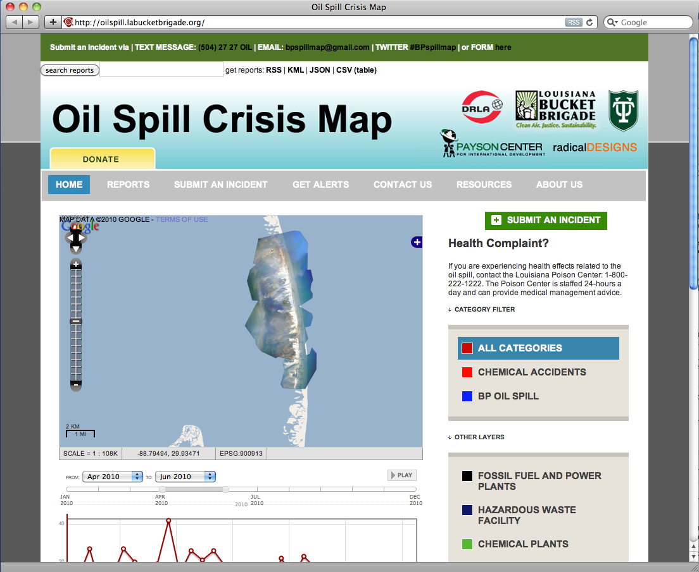

The LABB team had already set up an instance of the Ushahidi mobile-phone based crisis reporting tool for crowdsourced information gathering, and this continues to be one of their main priorities and most publicly visible responses to the spill. To better integrate our aerial mapping data with the Ushahidi platform, I inserted TMS layers of our data into the OpenLayers-based Ushahidi map display, so that report locations would appear overlaid on aerial imagery where available. This generated a feedback loop for mappers, who would often look to Ushahidi to identify clusters of oil sightings which made good candidate sites for aerial mapping.
| r0.5

|